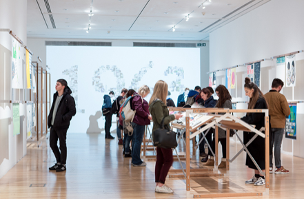

Adrian Shaughnessy: Working on the GraphicsRCA: Fifty Years exhibition and book has given me a deeper understanding of how the past shapes the present, but also how the notion of perpetual revolution—the sense that we have to rebel against the past in order to make the future—is the key to growing a healthy forward-looking institution such as the RCA.
Take the discipline of graphic design itself. If we consider the teaching of the subject at the RCA from its beginning in 1948, we see the repeated framing of the question—what is graphic design? The question was posed in the postwar era when the department was formed to cater for a new era of industrial and technological progress; it was asked again in the DayGlo blaze of the pop culture revolution of the 1960s; it was posed in the 1970s and 80s, as the increasing professionalization of graphic design threatened to obliterate avant garde trends; and again in the 1990s and into the new millennium, when graphic design moved into the digital dimension and acquired the postmodern trait of unyoking itself from traditional norms. And it is still asked today. But each time the question is asked, a different answer comes back. In your opinion, is this healthy? And are there constants – things that don’t change? Things we should hang onto?
Teal Triggs: I agree that GraphicsRCA: Fifty Years, overall has been an extraordinary experience in that it provides a rich source of material from the College and School-based archives through which we have been able to explore with current students, staff, and alumni as to what graphic design may have been at the RCA but equally, to speculate about its future possibilities. It has been an unique privilege to be able to be able to be immersed in an extraordinary archive of student work beginning in 1948 to the present, with the goal of better understanding the historical journey of a group of students over time; but also how their work has impacted or been influenced by the broader social, political, and production contexts. One does not sit independently of the other. So whilst the catalyst may be revolution, I would also argue it is also about an evolution as integrally linked to the shifting paradigms around design and the contexts in which it operates.
Richard Guyatt, who was appointed in 1948 as the first professor of Graphic Design at the RCA, introduced a vision of the art school as fostering a “life-long journey of self-discovery.” This could also describe the evolution that graphic design has undergone over the last fifty years, both as a profession and as a taught discipline.
Are there other constants? Students come into education with individual goals, desires and aspirations, so this in itself becomes a constant and a pedagogical challenge. You could also say that it is about the core values of what an art-school education has always represented—that is, informed models of stirring things up and tipping ideas upside down; this is where the role of experimentation and critical engagement resides. Equally, Graphic Design has a symbiotic relationship with fine art practice. Graphic arts was deeply rooted in craftsmanship, drawing, and printmaking; and formed a foundation from which Guyatt, for example, explored in relationship to the demands of this new, emerging profession. Simplistically, I think what remains at the core of our pedagogy at the RCA, is what Guyatt himself proposed in the 1940s as: “Head, Heart, Hand”—as essential ingredients in producing a holistic designer. So while I wouldn’t necessarily agree with an essentialist’s definition of design as meaning x, y, or z, I would probably say that the teaching methods and spirit of inquiry have stayed constant.
I guess what we need to ask now is how relevant the way we teach graphic design is fit for purpose? As graphic design as a profession shifts into exploring the role of communication within new kinds of spaces—e.g. less artefact-orientated, digital realm, etc.—how might we consider what we teach and how we teach?
AS: You raise a provocative question—how do we teach graphic design in a way that is “fit for purpose”? Especially when, as you also note, there is no longer a single definition for graphic design—an increasingly multi-dimensional, fluid and borderless activity. I came across a quote by the designer James Goggin, an RCA alumnus and now based in the US, that captures the new maturity in graphic design: “Graphic design,” he states, “now occupies a position where it should be confident enough as a discipline to be both a vehicle for fulfilling social needs and for expressing independent thought. A discipline equal to art, not aspiring to art.”
Coincidentally, this is a view remarkable similar to one expounded by Richard Guyatt in 1974. “I do not subscribe to the current view,” wrote Guyatt, “that one can separate the fine arts from design. For me the sparking point of interest in both these areas is the art with which they are practised. There's such a thing as the art of painting, and there’s such a thing as the art of designing, and sad it is for either if art is absent—as it is so often.” He also made the startlingly contemporary observation that “ … there is a growing awareness of the social role of the designer, a genuine wish to be of service to the community in a worthwhile way.” Both of these statements were unfashionable in the in the 1970s, and both seem to have a strong resonance amongst our current graphic design students who draw liberally from art theory and who also wish to apply design skills to social issues.
Against this background I think we need to think carefully about what we mean when we use the word “teaching” to describe what we do at RCA. As we are dealing exclusively with postgraduate students, I find that I rarely instruct my students. Instead, I offer critique—which I’m pleased to say is often rejected, thus opening up dialogues that resemble the world of professional practice more than the classroom. What we are trying to do is produce rounded, autonomous practitioners—and this will only happen if students develop the habit of independent thought. You have far more experience in teaching than me, but I wonder if you share my hesitation to call what we do teaching?
TT: Ah—you got me! You are right that the word “teaching” is perhaps not quite right as a term for what we do in general. However, in my defence, I was using “teaching” in a much broader sense; the RCA is a university and as such, a place where learning and teaching is undertaken. It is no accident that as a wholly art and design postgraduate institution, we place the term “learning” before that of “teaching.” I would also venture to say that the context of the art school, and all that brings to an ethos of “teaching” is important.
Teaching is not just about “instruction,” it can also be through critique, but in particular, where we are asking students to articulate their own positions. The role of the teacher is that of facilitator. One good example of this comes through the “Critical Forums” run in the second year of MA Visual Communication where RCA tutors David Blamey and Debbie Cook set up an agreed framework within which staff and students engage actively in exploring the role of critique as a way of moving their practice forward. These spaces work well as counterparts to the rest of our curriculum which tends to be much more fluid and responsive to student’s own personal goals.
This combination of learning and teaching approaches, I believe, is where graduates like James Goggin, have been given the space to explore, experiment and also gain access working across multiple disciplines. Such fluidity and encouragement of student-centred learning is further exemplified through the establishment of Department 21 by students in 2009, who advocated enhanced peer-learning within alternative learning spaces.
At the same time, such an approach also reflects the maturity of many of our learners on our MA and Research Degrees. Across the RCA the average age of students is around twenty-eight years old; and within the School we have a high proportion of mature students with some students coming straight off of undergraduate courses, but others returning to education after some years in practice. I think one of the exciting things about the RCA is the wide range of professional, cultural and educational experiences that students bring to their studies. This is also reflected in the demographics of our Faculty. I think one of the real strengths of the School is that we have educators and researchers like myself working alongside a high proportion of practitioners who are still firmly engaging in industry, professional practice, or other relevant disciplines outside of the academy.
Teaching is also taking a holistic approach of providing a framework (e.g. curriculum) that cultivates, stimulates, and motivates learners to learn. And, all of our experiences are brought to bear on setting up this framework for learning. I’ve been doing some research around collaborative learning recently, and I would venture to say that the way we teach—or the way we set up a framework for learning—is based on a fundamental belief that, in part, learning can be collaborative; between students and students, as well as academic/technical support staff and students. This is also confirmed by a physical “co-existence” where students work next to each other in studios; such proximity fosters greater understanding between students and their home disciplines.
Looking to the future where do you see this kind of collaborative teaching going? As someone with extensive industry experience, what do you feel RCA graduates provide in terms of “value” to industry and the profession, more generally?
AS: This is the killer question. Oddly, in the days when I ran a studio, I hired a number of graduates from the RCA and they were all wonderful, in their different often-contrary ways. Not always easy and certainly not oven-ready studio fodder. They all possessed the “autonomy” gene, which while it was an admirable quality, wasn’t always the most helpful asset in a professional context. Ultimately, however, everyone I employed from the RCA went on to form their own studios. And I suppose if you encourage a critical frame of mind—what Neville calls “dangerous minds”—independence really is the only option.
But it is not an easy option—especially at a time of financial austerity, the “internetization” of services, and the rise of mass communication by formatted social media platforms. There is a long and noble RCA tradition of graduates emerging after two years of self-reflecting study and forming fully-fledged studios. This seamless transfer is much less common today, but something equally admirable has taken its place. I see a new flexibility and a willingness to embrace the notion of design as an expanded practice—one that that can encompass many things: the designer as researcher, thinker, activist, publisher, innovator, and agent for social change. In reality this means a hybrid practice encompassing design-for-hire, research, teaching, publishing, exhibiting, work-shopping, campaigning, and anything else that requires a non-rigid, non authoritarian, collaborative sensibility. This to me is not only a model for RCA graduates but should be the aim of all graphic design graduates who want to cope with a changing future.
TT: I think your point about RCA graduates embracing an “expanded practice” is a good one, and often the opposite of many masters’ level programmes which tend to offer students a more subject specialist education. The RCA provides a framework that is “expandable” in that it broadens out the student experience—especially in the first year (of a two-year course), whilst also encouraging a deeper engagement through methods of research, critical engagement and the process of making. I think this approach fosters the ability (and confidence) to move inside and outside of the subject with some ease. This explain one of the reasons as to why a large proportion of our graduates go on to be involved in some capacity as teachers. So it comes full circle for me: “Head, Heart, Hand”—I believe are also the attributes of not only a holistic designer, but also a holistic educator.
We are entering into a period of uncertainty for graphic design; and, with this a paradigm shift. This suggests a re-evaluation of our roles and approaches as practitioners and educators. We should be asking questions about articulating our subject’s relevancy for the future. Yet, I’m not worried. Our understanding of the past has also propelled us to move forward. Graphic design is sort of like an episode of Star Trek. We are on an interstellar adventure … and, at “warp speed.”
